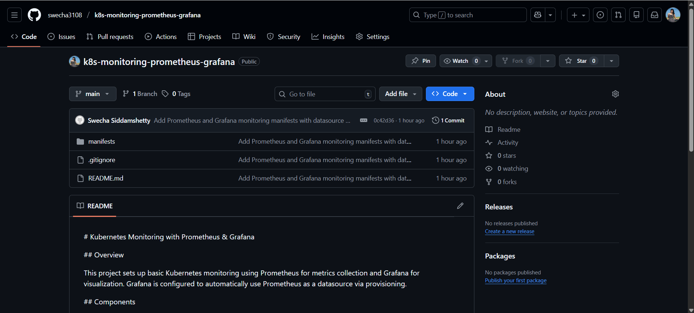
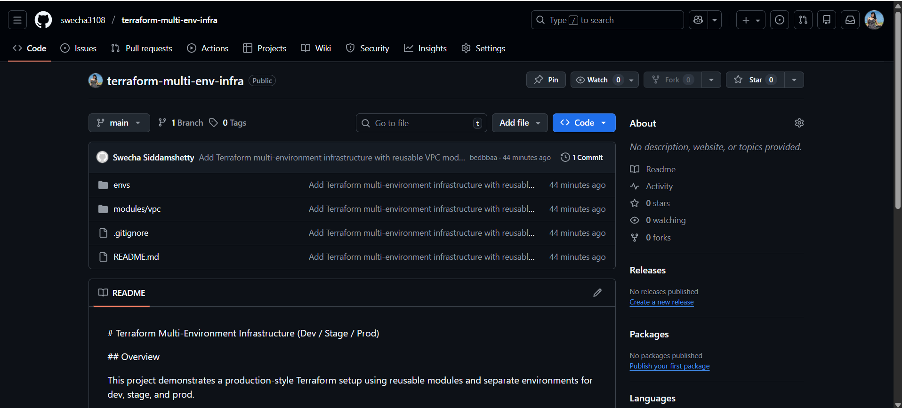

Projects
Kubernetes Monitoring (Prometheus & Grafana)
Implemented cluster-wide monitoring using Prometheus and Grafana.
View on GitHubKubernetes Deployment Strategies

Implemented Rolling Update and Blue/Green deployment strategies.
View on GitHubTerraform Multi-Environment Infrastructure
Designed reusable Terraform configurations for dev, stage, and prod.
View on GitHubCI/CD with GitHub Actions

Automated CI pipelines using GitHub Actions.
View on GitHub